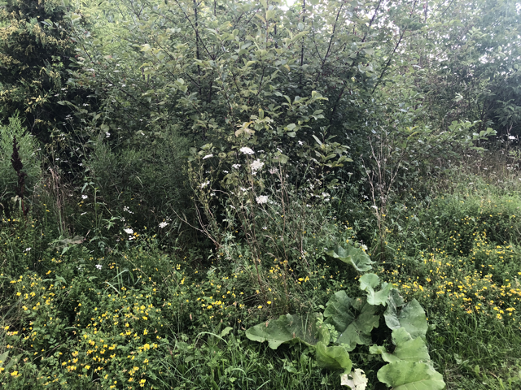
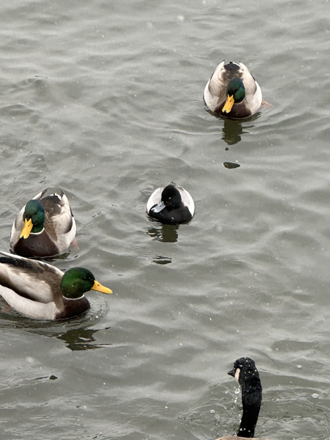
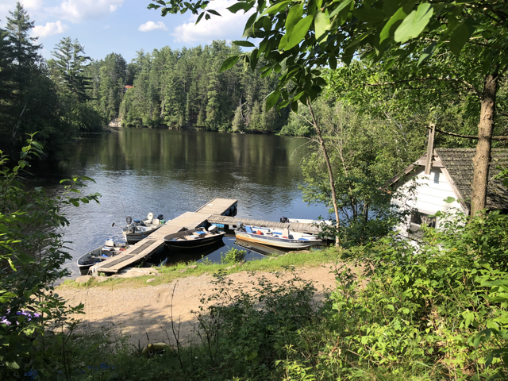
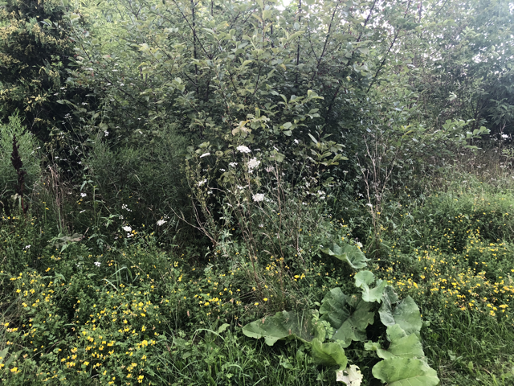
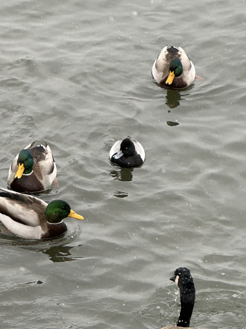
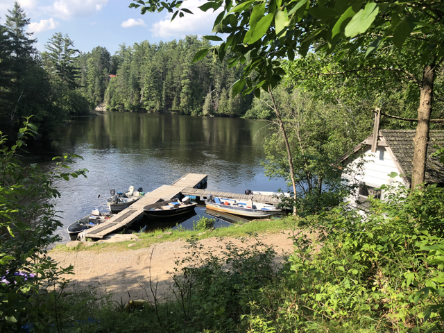

HIGH PARK
High Park has both wilderness-adjacent trails and manicured parkland. It’s home to the rare black oak savannah biome, so the woodland trails have sandy ground. Since it's close to where I live I generally walk there when I’m bored, since there’s a lot to do, from just walking around to visiting the Colborne Lodge Museum.
In the spring/ summer I like to come with binoculars to look at birds and turtles on the other side of Grenadier pond. There’s a train that goes around the park, as well as a zoo and a rather large children’s playground. In the winter there’s a skating rink, or you can go on Grenadier pond when it's cold enough (though there's the risk of police officers, fishing holes, and guys that skate super fast).
MILL VALLEY PARK
Near my friend's house. So many deep conversations happened on this trail. There's an old rusty car in the woods.
LAKESHORE
Another great gem near my house! Go left and you can reach downtown. Go right and there's a lot of nice beaches and wilderness areas, a great ice cream spot, and eventually one of my friends’ house! This place is great all season round because in the winter you get the weird ducks like the lesser scaups, mergansers, goldeneyes, trumpeter swans, buffleheads, etc. Then in the summer you get to swim in the lake (it is gross but my mom does this and therefore so do I. I try my best to avoid getting the water anywhere near my face. I am building my immune system with this one) and also get ice cream from Lola’s Gelato. In the spring and fall you can just walk around. As a kid I often went to the playground and splash pad with my friend during the summer.
BANCROFT/ COMBERMERE/ CRAIGMONT AREA
Since 2020 my parents and I have been staying at a cabin resort in this area. There's a trail half an hour away that has an old mineshaft, where I lost my flip flop the first time I went there. The next time, a month later, I found it again. This place is great to go mushroom hunting since there's a lot of chanterelles and lobster mushrooms, and also a great fishing spot apparently (I think this is debatable). The trail with the mineshaft also has a path that goes up, where there's 2-3 ponds and an area that overlooks the Madawaska river . There’s a very windy lake we go to when we need to get cell service, and it kind of sucks because a) it is very windy and b) the main beach is shallow (but if you go to the left side through the watergrass it deepens significantly). The summer before I went to uni my mom and I sat on the dock every night to look at the stars.